Recovered from the software package. Odia glyphs below are new static images drawn with the original font; adjacent English keys follow the saved document. No installation is required. About this recovery
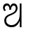
= a = A = i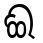
= I = u = U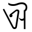
= E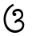
= o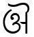
= O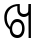
= kha = ga = gha = w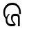
= ja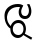
= jha = n-y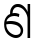
= Na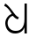
= dha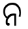
= na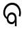
= ba = bha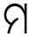
= ma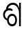
= sh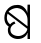
= S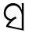
= s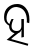
= ha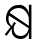
= khY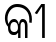
= kI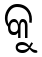
= ku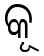
= kU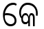
= ke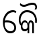
= kE = ko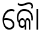
= kO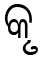
= k-R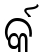
= k'r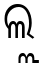
= l-l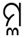
= m-L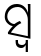
= s-w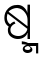
= S-M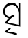
= s-/ = t-,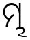
= m-.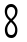
= : = G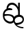
= N-Dh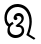
= t-t = d-g = d-d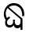
= d-dh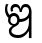
= n-c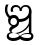
= n-ch = n- j = n-jh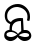
= n-th = n-d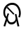
= n-dh = p-t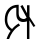
= m'p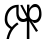
= m'ph = m-m = L-k = L-p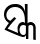
= s-k = s-kh = s-t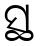
= s-th = s-p